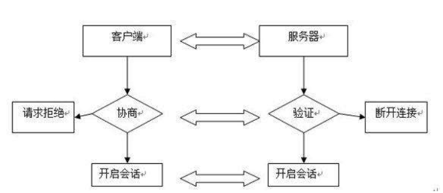
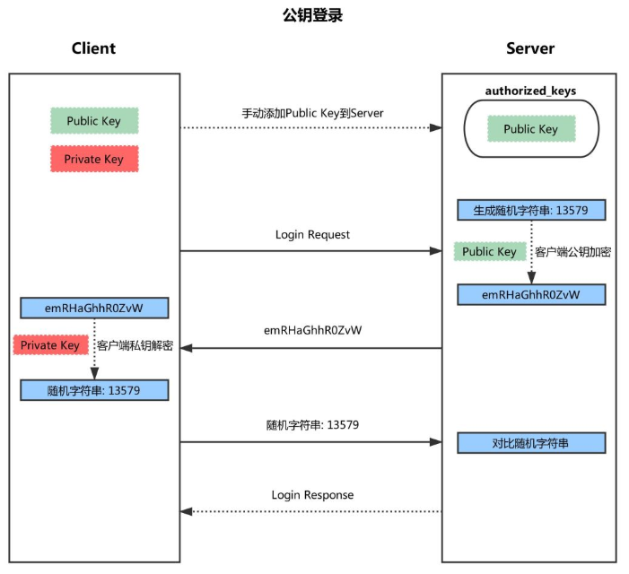
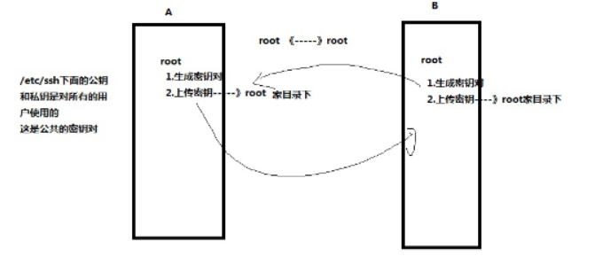

什么是SSH
- SSH (Secure Shell, 安全的命令解释器)
- 为客户机提供安全的she11环境，用于远程管理– 客户机通过ssh服务连接到远程的服务器上，进行操作。—-》控制远程服务器
- 默认端口：TCP 22
- wins没有，Linux里有Unix里有
- SSH就是一一个客户机进程管理服务器的一个服务。因为中间传输的数据是加密，所以非常安全。不会出现信息泄露
- telnet:明文传输—》已被淘汰 —》监听23端口
- SSH基于公钥加密非对称加密)技术
- 数据加密传输
- .客户端和服务器的身份验证
- 配置文件：
- /etc/ssh
传统的网络服务程序（如ftp,telnet）在网络上使用明文传输数据，这样别有用心的人就可以非常容易的截取口令和数据，而且这些服务程序的安全验证方式其实也是有弱点的，就是很容易受到“中间人”（man-in-the-middle）方式的攻击。所谓“中间人”的攻击方式，就是“中间人”冒充真正的服务器接收你传给服务器的数据，然后再冒充你把数据传给真正的服务器。服务器和你之间的数据传送被“中间人”一转手做了手脚之后，就会出现很严重的问题。
SSH是一种基于应用层的网络协议，用于计算机之间的加密登录，并且在远程的主机上执行命令。
通过使用SSH，你可以把所有传输的数据进行加密，这样“中间人”这种攻击方式就不可能实现了，而且也能够防止DNS和IP欺骗。还有一个额外的好处就是传输的数据是经过压缩的，所以可以加快传输的速度。
数据加密和数字签名
数据加密
- 不让别人能看懂
数据签名
- 不能抵赖，用来确认身份的
- 发送方
- 对原始数据执行HASH算法得到摘要值
- 发送方用自己私钥加密摘要值
- 将加密的摘要值与原始数据发送给接收方
- 接收方
- 用发送方公钥解密摘要值;同时对收到的原始数据同
- 样执行HASH产生另一摘要值
- 将解密的摘要值与产生的摘要值对比
- 意义：
- 数字签名保证数据完整性、身份验证和不可否认
密码认证：
ssh远程连接服务器，服务器就会把公钥给客户机，客户机一般存放在/root/.ssh/known_hosts
.ssh目录和known_hosts文件 是自动创建，只要你远程连接一次ssh服务器就可以了
存放公钥的文件known_hosts
1 | [root@cali .ssh]# cat known_hosts |
OPenSSH
1
2
3
4
5
6
7
8
9
10
11
12
13
14
15
16
17
18
19
20rpm -qa 查询本机上安装的所有软件
[root@PC1 scripts]# rpm -qa |grep openssh
openssh-clients-7.4p1-16.el7.x86_64 提供客户端使用的命令的软件包 ssh
openssh-7.4p1-16.el7.x86_64
openssh-server-7.4p1-16.el7.x86_64 ssh服务器的软件包
[root@PC1 scripts]#
[root@localhost ~]# which sshd 提供ssh服务的程序（服务器端）
/usr/sbin/sshd
[root@localhost ~]# which ssh 查询ssh客户端的命令（远程连接的命令）
/usr/bin/ssh
[root@localhost ~]# rpm -qf /usr/sbin/sshd 查询命令是通过哪个软件包安装过来的
openssh-server-7.4p1-16.el7.x86_64
[root@localhost ~]# rpm -qf /usr/bin/ssh
openssh-clients-7.4p1-16.el7.x86_64
[root@localhost ~]#
rpm 是linux里的软件管理的命令
yum 也是linux里的软件管理的命令，yum底层使用的是rpm
yum安装软件可以自动解决依赖关系
A-->B-->C官方站点: http://www.openssh.com
主要软件包: openssh-server. openssh-clients
服务名:sshd
服务端主程序: /usr/sbin/sshd
客户端主程序: /usr/bin/ssh-
服务端配置文件: /etc/ssh/sshd_ config
客户端配置文件: /etc/ssh/ssh_ config
注：
守护进程：一直在内存里运行的，除非你主动停止，不然会一直运行。
sshd服务默认情况下开机启动，而且防火墙也是默认允许访问
SSH配置文件里的内容
配置文件主要是往程序里传递参数的
私钥： ssh_host_ecdsa_key
公钥：ssh_host_ecdsa_key.pub不同的加密算法：ecdsa（默认使用）、rsa、ed25519
1 | [root@cali .ssh]# cd /etc/ssh/ |
修改了配置文件端口号，启动不起来，原因是selinux是enforcing状态
需要修改远程登录的时候，用户的密码不能为空
selinux是linux下的一套安全机制，保护linux的安全1
2
3
4
5
6
7
8
9[root@localhost ssh]# getenforce 查看selinux的状态
Enforcing 开启（强制执行）
[root@localhost ssh]# setenforce 0 临时关闭selinux
[root@localhost ssh]# getenforce
Permissive 临时关闭状态
[root@localhost ssh]#
永久关闭selinux
[root@localhost ssh]# vim /etc/sysconfig/selinux
SELINUX=disabled --》禁用
重新启动sshd服务，因为修改了配置文件，需要重新启动才能生效
1
2
3[root@localhost ssh]# service sshd restart
Redirecting to /bin/systemctl restart sshd.service
[root@localhost ssh]#关闭防火墙服务
1
2
3
4
5
6
7
8
9
10
11
12[root@localhost ssh]# service firewalld stop 停止firewalld服务
Redirecting to /bin/systemctl stop firewalld.service
[root@localhost ssh]# iptables -L 查看防火墙规则
Chain INPUT (policy ACCEPT)
target prot opt source destination
Chain FORWARD (policy ACCEPT)
target prot opt source destination
Chain OUTPUT (policy ACCEPT)
target prot opt source destination
[root@localhost ssh]#禁用了root远程登录，但是可以使用普通用户先登录，然后再使用su切换到root就可以了
1
2
3
4
5
6
7
8[xu@localhost ~]$ su - root
密码：
上一次登录：四 4月 25 11:22:11 CST 2019从 192.168.0.61pts/2 上
最后一次失败的登录：四 4月 25 11:45:04 CST 2019从 192.168.0.187ssh:notty 上
最有一次成功登录后有 1 次失败的登录尝试。
[root@localhost ~]#
[root@localhost ~]#
[root@localhost ~]#ssh服务的日志文件的路径
1
2
3
4
5
6
7
8
9
10
11
12
13[root@localhost ssh]# cd /var/log
secure
[root@localhost log]# tailf /var/log/secure
Apr 25 11:49:24 localhost su: pam_limits(su-l:session): unknown limit item ' '
Apr 25 11:49:24 localhost su: pam_limits(su-l:session): unknown limit item ' '
Apr 25 11:49:24 localhost su: pam_unix(su-l:session): session opened for user root by xu(uid=1001)
Apr 25 11:52:04 localhost sshd[14593]: User cali from 192.168.0.187 not allowed because listed in DenyUsers
Apr 25 11:52:04 localhost sshd[14593]: input_userauth_request: invalid user cali [preauth]
Apr 25 11:52:05 localhost unix_chkpwd[14595]: password check failed for user (cali)
Apr 25 11:52:05 localhost sshd[14593]: pam_unix(sshd:auth): authentication failure; logname= uid=0 euid=0 tty=ssh ruser= rhost=192.168.0.187 user=cali
Apr 25 11:52:07 localhost sshd[14593]: Failed password for invalid user cali from 192.168.0.187 port 54639 ssh2
Apr 25 11:52:18 localhost sshd[14593]: error: Received disconnect from 192.168.0.187 port 54639:0: [preauth]
Apr 25 11:52:18 localhost sshd[14593]: Disconnected from 192.168.0.187 port 54639 [preauth]
ssh的安全方面的基本配置 –》加固ssh服务
1 | 1.修改端口号 |
刷新sshd服务
1 | [root@LB-BACKUP ssh]# service sshd restart |
因为禁用了root用户，所以需要新建普通用户，然后使用su - root 切换到root用户登录
1 | [root@LB-BACKUP ssh]# useradd cali |
使用命令ssh登录，指定端口号和用户名
1 | [root@cali ssh]# ssh cali@192.168.0.117 -p 9988 |
如果不接用户名会以当前登录的用户名去远程登录
SSH的连接原理
ssh服务端是一个守护进程（demon）,系统后台运行并响应客户端的连接请求，ssh客户端的进程名为sshd,负责实时监听客户端的请求（IP 22端口），包括公共秘钥等交换等信息。
SSH的工作原理：本地客户端发送一个连接请求到远程的服务端，服务端检查申请的包和IP地址再发送密钥给SSH客户端，客户端再将密钥发回给服务端连接建立。

启动SSH服务器后，sshd进程运行并在默认的22端口进行监听。安全验证方式：
- 基于口令的安全验证（账号密码）
- 也有可能受到中间人攻击
- 基于密钥的安全验证
- 就是提供一对密钥，把公钥放在需要访问的服务器上，如果连接到SSH服务器上，客户端就会向服务器发出请求，请求用密钥进行安全验证，服务器收到请求之后，先在改服务器的主目录下寻找公钥，然后把它和发送过来的公钥进行比较。如果两个密钥一致，服务器就用公钥加密“质询”并把它发送给客户端。客户端收到“质询”之后就可以用私钥解密再把它发给服务器端。基于这种方式，相对比较安全。
- 基于口令的安全验证（账号密码）
SSH的工作机制
SSH以非对称加密方式实现安全验证，有以下两种方式：
基于口令的安全验证
基于密码的安全验证方式是一直在用的，只要你知道自己帐号和口令，就可以登录到远程主机.
是使用自动生成的公钥-私钥来简单的加密网络连接再使用密码认证进行登录。
但是不能保证连接的服务器就是你的目标服务器，可能会有“中间人”攻击。

- SSH密码验证，主要分为以下几个步骤：
- 用户（客户端）使用ssh user@host命令对远程主机(服务器)发起登录请求
- 远程主机（服务器）收到请求之后，将自己的公钥返回给请求主机（客户端）
- 请求主机会根据服务器发来的公钥对用户输入的密码进行加密
- 请求主机将将加密后的密码回传给远程主机
- 远程主机使用自己的私钥对密码进行解密，如果密码正确则用户登陆成功，反之则登陆失败
- 这个过程本身是安全的，但在实际工作中，却是存在风险漏洞的。由于SSH不像https协议那样，SSH协议的公钥是没有证书中心（CA）公证的，也就是说，都是自己签发的。
- 这就导致如果攻击者插在用户与远程主机之间（比如在公共的wifi区域），截获了登陆请求，然后冒充远程主机，将伪造的公钥发给用户，那么用户很难辨别真伪，用户再通过伪造的公钥加密密码，再发送给冒充主机，此时冒充的主机就可以获取用户的登陆密码了，那么SSH的安全机制就荡然无存了，这也就是我们常说的中间人攻击。
- SSH密码验证，主要分为以下几个步骤：
当你是第一次登陆对方主机，系统会提示下面的语句：
1
2
3
4$ ssh user@host
The authenticity of host 'host (12.18.429.21)' can't be established.
RSA key fingerprint is 98:2e:d7:e0:de:9f:ac:67:28:c2:42:2d:37:16:58:4d.
Are you sure you want to continue connecting (yes/no)?当远程主机的公钥被接受以后，它就会被保存在文件$HOME/.ssh/known_hosts之中。下次再连接这台主机，系统就会认出它的公钥已经保存在本地了，从而跳过警告部分，直接提示输入密码。
每个SSH用户都有自己的known_hosts文件，此外系统也有一个这样的文件，通常是/etc/ssh/ssh_known_hosts，保存一些对所有用户都可信赖的远程主机的公钥。
基于密钥的登录方式（公钥放在服务器，私钥放在本地）
使用密码登录，每次都必须输入密码，非常麻烦。好在SSH还提供了公钥登录，可以省去输入密码的步骤。
客户端生成一对公钥和私钥，并将自己的公钥放在服务器上。客户端请求登陆的时候，服务器会向客户端发送一段随机字符串，客户端用自己的私钥加密之后，再发回来。服务器用实现存储的公钥进行解密，如果成功则证明用户是可行的，允许直接登录不需要再输密码，从而避免了“中间人”攻击。

- ssh免密登录的前提就要求用户自己必须要提供自己的公钥。可以使用
ssh-keygen -t RSA生成公私秘钥对，然后通过ssh-copy-id -i ~/.ssh/id_rsa.pub user@host命令将公钥分发至远程主机。接下来的每次免密登陆步骤如下：- 客户端发送登录请求，ssh user@hostname
- 服务端得到客户端的请求后，会到authorized_keys中查找，如果有相应的IP和用户，就会随机生成一个字符串。
- 服务器用公钥对字符串进行加密后传输到客户端
- 客户端使用私钥对这个随机串进行解密，并将解密的随机串返回至服务端；
- 服务端接受到客户端发来的解密后的字符串，与之前的进行对比
- 如果解密成功，则证明用户的登录信息时正确的，则允许登录，反之不允许
- 通过
ssh-copy-id -i ~/.ssh/id_rsa.pub user@host命令分发的公钥都会被保存至远程主机的~/.ssh/authorized_keys文件中。
SSH的加密技术
加密技术：传输过程，数据加密。
1.SSH1没有对客户端的秘钥进行校验，很容易被植入恶意代码
2.SSH2增加了一个确认联机正确性的Diffe_Hellman机制，每次数据的传输，Server都会检查数据来源的正确性，避免黑客入侵。
SSH2支持RSA和DSA密钥
DSA:digital signature Algorithm 数字签名
RSA:既可以数字签名又可以加密
密钥认证的实现
clients ：192.168.0.133
server：192.168.0.51
username ： sc —》 服务器上的root用户的家目录
1.新建用户在客户机上
1 | [root@cali ~]# useradd sc |
不要去修改私钥的文件的权限，如果修改权限会导致密钥认证失效
1 | [sc@cali .ssh]$ ll |
2.在客户机上上传公钥文件到服务器
1 | 问题：服务器上需要允许root用户登录，因为我们想使用root的权限 |
公钥上传到哪里？
1 | 需要到服务器的root用户的家目录下.ssh目录查看 |
3.测试登录
1 | [sc@mysql-2 .ssh]$ ssh -p 9988 root@192.168.0.51 |
登录验证的时候，先进行密钥认证，认证失败会使用密码认证
单向信任： 一方将密钥给了另外一方
双向信任：互相之间给了密钥
1 | root 《---》root |

建立了密钥认证的好处：
1 | 1.连接不需要输入密码 |
在客户机上编写脚本，实现新建一个文件夹的功能，可以写其他功能。
1 | [sc@cali ~]$ vim mk_wt.sh |
上传文件到服务器
1 | [sc@cali ~]$ scp -P 9988 mk_wt.sh root@192.168.0.117:/root |
让远程服务器执行 bash /root/mk_wt.sh 命令
1 | [sc@cali ~]$ ssh -p 9988 root@192.168.0.117 bash /root/mk_wt.sh |
如何防止SSH登录入侵
1.密钥登录,更改端口
2.牤牛阵法 ：解决SSH安全问题
3.监听本地内网IP(ListenAddress 192.168.25.*)
4.防火墙封闭SSH，指定源限制（局域网，信任公网）
5.尽量不给服务器外网IP
SSH知识小结
1.SSH是安全的加密协议，用于远程连接Linux服务器
2.SSH的默认端口是22，安全协议版本是SSH2
3.SSH服务器端主要包含2个服务功能SSH连接和SFTP服务器
4.SSH客户端包含ssh连接命令和远程拷贝scp命令等
其他
如何知道一个服务是否运行？
1
2
3
4
5
6
7
8
9
10
11
12
13
14
15
16
17
18
19
20
21
22
23
241.判断进程是否存在
2.判断端口是否被占用
[root@cali .ssh]# ps aux|grep sshd
root 1212 0.0 0.1 83008 1408 ? Ss 10:26 0:00 /usr/sbin/sshd
root 2311 0.0 0.5 146072 5688 ? Ss 10:46 0:00 sshd: root@pts/0
root 2346 0.0 0.5 146072 5688 ? Ss 10:54 0:00 sshd: root@pts/1
root 2400 0.0 0.0 112724 972 pts/0 S+ 11:01 0:00 grep --color=autosshd
[root@localhost ssh]# yum install lsof -y 安装lsof软件
[root@cali .ssh]# lsof -i:22 查看22号端口被那个进程占用
COMMAND PID USER FD TYPE DEVICE SIZE/OFF NODE NAME
sshd 1212 root 3u IPv4 19037 0t0 TCP *:ssh (LISTEN)
sshd 1212 root 4u IPv6 19046 0t0 TCP *:ssh (LISTEN)
sshd 2311 root 3u IPv4 22327 0t0 TCP cali.sanchuangedu.cn:ssh->192.168.0.247:49826 (ESTABLISHED)
sshd 2346 root 3u IPv4 23211 0t0 TCP cali.sanchuangedu.cn:ssh->192.168.0.55:53395 (ESTABLISHED)
[root@cali .ssh]#
[root@cali .ssh]# w
11:02:42 up 36 min, 2 users, load average: 0.03, 0.02, 0.05
USER TTY FROM LOGIN@ IDLE JCPU PCPU WHAT
root pts/0 192.168.0.247 10:46 2.00s 0.05s 0.01s w
root pts/1 192.168.0.55 10:54 1:30 0.02s 0.02s -bash
[root@cali .ssh]#- netstat 是用来查看本机开发了的所有的端口
1
2
3
4
5
6
7
8
9
10
11
12
13
14[root@localhost ssh]# netstat -anplut
Active Internet connections (servers and established)
Proto Recv-Q Send-Q Local Address Foreign Address State PID/Program name
tcp 0 0 0.0.0.0:22 0.0.0.0:* LISTEN 8256/sshd
tcp 0 0 127.0.0.1:25 0.0.0.0:* LISTEN 8580/master
tcp 0 0 192.168.0.52:22 192.168.0.187:59105 ESTABLISHED 13174/sshd: root@pt
tcp 0 52 192.168.0.51:22 192.168.0.187:52383 ESTABLISHED 13866/sshd: root@pt
tcp6 0 0 :::3306 :::* LISTEN 8310/mysqld
tcp6 0 0 :::22 :::* LISTEN 8256/sshd
tcp6 0 0 ::1:25 :::* LISTEN 8580/master
udp 0 0 0.0.0.0:68 0.0.0.0:* 13791/dhclient
udp 0 0 127.0.0.1:323 0.0.0.0:* 7749/chronyd
udp6 0 0 ::1:323 :::* 7749/chronyd
[root@localhost ssh]#查询命令是通过哪个软件安装过来的
1 | [root@localhost ssh]# yum provides netstat 没有安装netstat也可以查询 |
日志
日志服务的配置文件里的对应的设备类型和日志应该写到哪个文件里的配置
设备类型：
1
2
3
4
5
6
7authpriv
cron
mail
kern
uucp
news
local7 自定义设备消息级别：
1
2
3
4
5
6
7none 没有
debug 调试
info 一般信息
warn 警告
error 错误
crit 严重
emerg 紧急cron.info 要记录info以上级别的日志，包括info级别 authpriv.* 记录所有级别的信息
1
2
3
4
5
6
7
8
9[root@LB-BACKUP ssh]# vim /etc/rsyslog.conf
# The authpriv file has restricted access.
authpriv.* /var/log/secure
记录authpriv设备类型下的所有级别日志，存放到/var/log/secure文件
*.info;mail.none;authpriv.none;cron.none /var/log/messages
记录所有的设备类型的info以上级别的日志，不包括mail、authpriv、cron
cron.none表示不要记录cron的日志rsyslog服务是专门用来记录日志的服务 ssh是专门用来远程登录和操作服务
ssh服务把自己的日志功能外包给rsyslog
nginx服务有自己的日志功能，没有外包给rsyslog
ssh认证方式
1
21.密码认证（默认）
2.密钥认证（需要配置）有效行
1
2
3
4
5
6
7
8
9
10
11
12
13
14
15
16
17
18
19
20
21
22
23
24
25
26[root@localhost ssh]# cat sshd_config |egrep -v '^#|^$'
Port 9988
HostKey /etc/ssh/ssh_host_rsa_key
HostKey /etc/ssh/ssh_host_ecdsa_key
HostKey /etc/ssh/ssh_host_ed25519_key
SyslogFacility AUTHPRIV
PermitRootLogin no
Denyusers chenweihang cali
AuthorizedKeysFile .ssh/authorized_keys
PasswordAuthentication yes
ChallengeResponseAuthentication no
GSSAPIAuthentication yes
GSSAPICleanupCredentials no
UsePAM yes
X11Forwarding yes
AcceptEnv LANG LC_CTYPE LC_NUMERIC LC_TIME LC_COLLATE LC_MONETARY LC_MESSAGES
AcceptEnv LC_PAPER LC_NAME LC_ADDRESS LC_TELEPHONE LC_MEASUREMENT
AcceptEnv LC_IDENTIFICATION LC_ALL LANGUAGE
AcceptEnv XMODIFIERS
Subsystem sftp /usr/libexec/openssh/sftp-server
[root@localhost ssh]#
ESTABLISHE --》已经建立连接
LISTEN --》监听--》打开了端口号，等待连接启动服务： [root@localhost ssh]# systemctl start sshd [root@localhost ssh]# systemctl restart sshd [root@localhost ssh]# service sshd restart [root@localhost ssh]# service sshd start [root@localhost ssh]# service sshd stop ssh命令登录
-p 指定端口号
1
2
3
4
5
6
7
8[abc@localhost ~]$ ssh -p 5698 xu@192.168.0.88
xu@192.168.0.88's password:
Permission denied, please try again.
xu@192.168.0.88's password:
Last failed login: Thu Apr 25 14:50:27 CST 2019 from 192.168.0.51 on ssh:notty
There were 4 failed login attempts since the last successful login.
Last login: Thu Apr 25 11:52:34 2019 from 192.168.0.32
[xu@mysql-2 ~]$